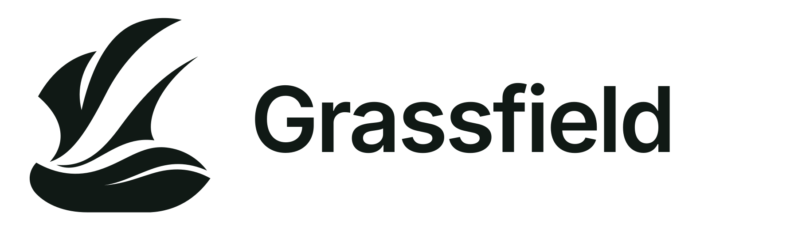

Inspiré des hauts plateauxUne identité
Une identité
qui s’élève.
Deux reliefs, ancrés dans les hauts plateaux des Grassfields.

Une marque, plusieurs usages.


Une palette naturelle et lisible.
Encre
#101915
Blanc
#FFFFFF
Grassfield
#26763F
Lumière
#4FB36B
Surface
#F4F7F2
Forêt
#173C2B
De l’espace pour respirer.
Un bureau qui vous ressemble.Grassfield Desktop
Proposition de marque · Voir README.md pour les usages, limites et conditions de validation.